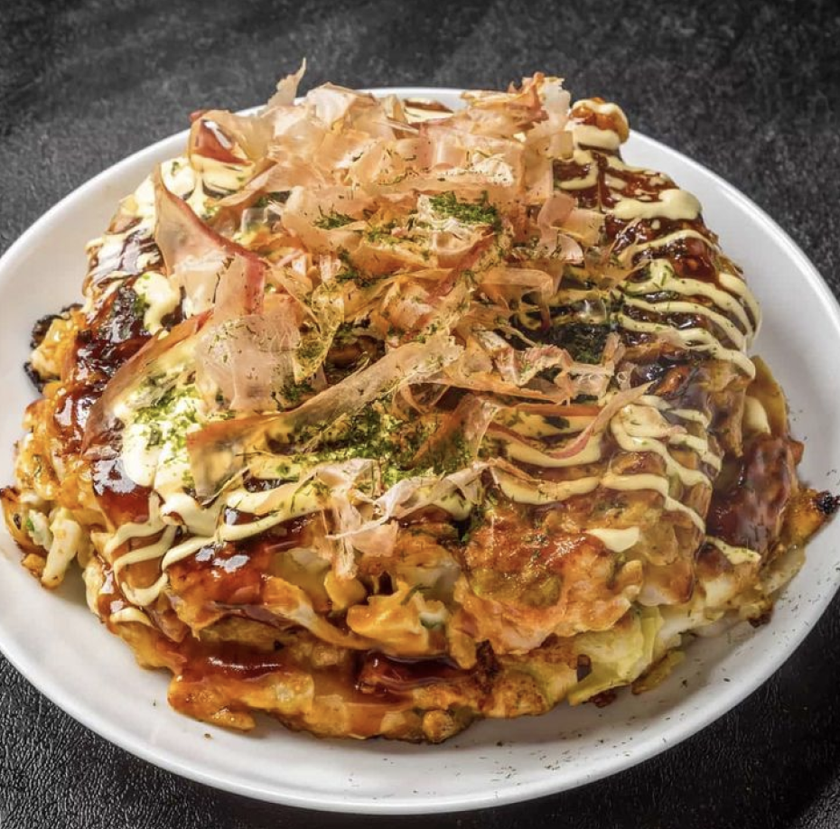

라멘(ラーメン)🍜
라멘은 국수와 국물, 다양한 토핑으로 구성된 일본식 국물 요리입니다. 각 지역마다 독특한 라멘 스타일이 있음.
종류:
-쇼유 라멘: 간장 기반 국물.
-미소 라멘: 된장 기반 국물.
-시오 라멘: 소금 기반 국물.
우동(うどん)🍲
두꺼운 면발의 국수 요리로, 간장 베이스의 뜨거운 국물이나 차가운 형태로 즐길 수 있음.
대표요리:
대표 요리: 키츠네 우동(튀긴 두부 토핑), 가마아게 우동(데친 우동).
�특징:쫄깃한 면발과 깔끔한 국물 맛.

오코노미야끼(お好み焼き)🧇
특징:
-취향에 따라 소스, 마요네즈, 가쓰오부시(가다랑어포)를 추가함.
-밀가루 반죽에 양배추, 해산물, 돼지고기 등을 섞어 철판에서 구워낸 음식으로 "일본식 부침개"로 불리기도 함.
-재료는 개인의 취향에 따라 다양하게 추가할 수 있어 맞춤형 요리로 즐길 수 있습니다.